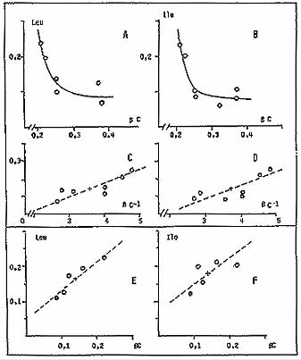

Page 13
|
Use ARROWS to page backward or forward
|
|
Page 13
|
ization of stresses even in particular cases where no deviation of the concentrations from the normal range of natural values can be detected.
The Functional Relationships Between Free Amino Acids And Chlorophyll Pigments (Figure 4).
First suggested by Jain (1966), were pointed out both in dicotyledones and monocotyledones (Bounias, 1972; 1973; 1975), following experiments conducted in controlled artificial conditions in growth chambers.
A detailed analysis of the biochemical content of samples collected at D+ 730, show these functional relationships to be found again (Figure 4A).
This means that the deviations observed in the range of the natural variability do respect normal physiological law, despite uncontrolled (field) conditions.
Plotting the same parameters from samples collected at D+ 40 surprisingly led to a completely reversed relation (Figure 4B).
It is noteworthy that not only the points situated far from the epicenter at
|  |
|
Fig. 5. Functional relationships between leucine or isoleucine and à carotene concentrations (nmol per mg): A and B: control samples at D+ 730 in natural units and C, D, in semi reciprocal units. E and F: samples at D+ 40 in natural units; the solid dots represent the point at epicenter. |